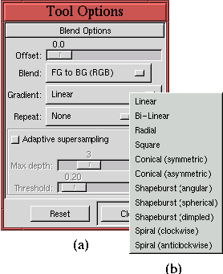
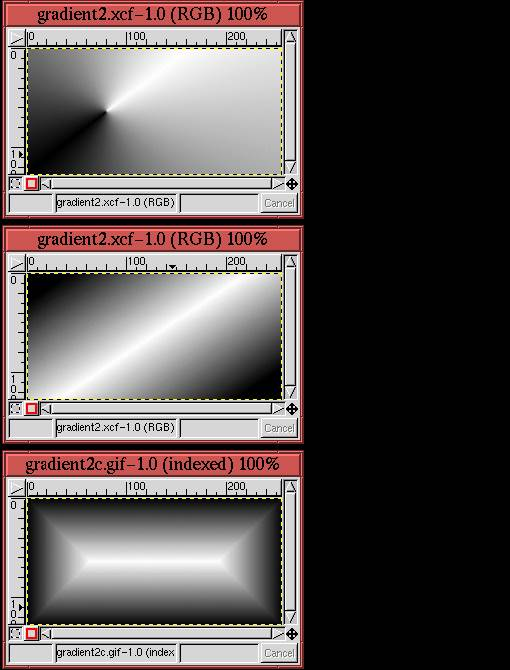
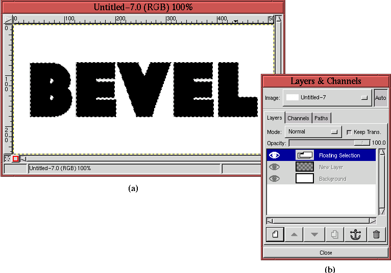
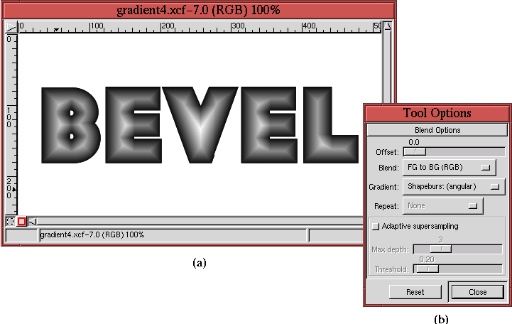
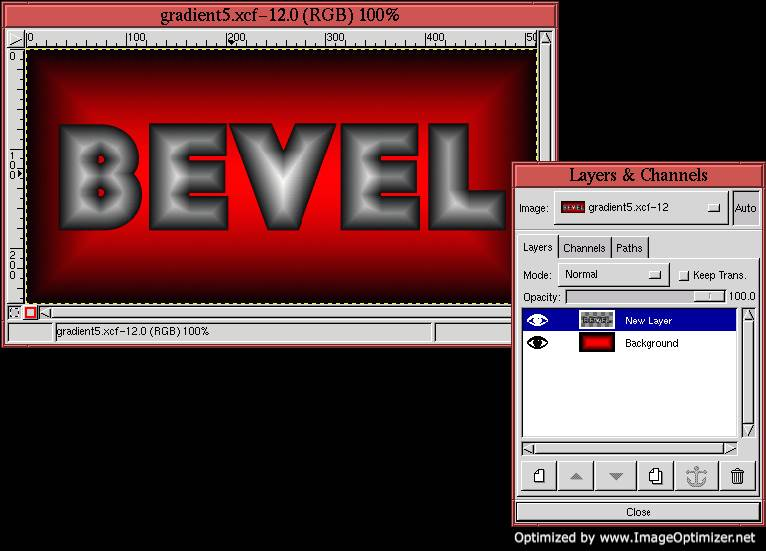

Next: 8.3 The Emboss and
Up: 8. Rendering Techniques
Previous: 8.1 The Bucket Fill
8.2 Gradient Rendering Techniques
In Section 4.3.3, gradients were discussed as tools
for making masks. However, they are also very useful for rendering.
Figure 8.4
Figure 8.4:
The Different Gradient Types
|  |
shows the Tool Options dialog for the Gradient tool. As
shown in the Blend menu, there are a total of 11 different gradient
types. The Conical (symmetric), Shapeburst,
and Bi-Linear options are of particular interest for rendering effects.
Figure 8.5
Figure 8.5:
Examples of Conical, Bi-Linear, and Shapeburst Gradients
|  |
illustrates examples of conical, bi-linear, and shapeburst gradients.
As shown in Figure 8.5(a), conical gradients
produce a dimpled effect. As illustrated in
Figure 8.5(b), bi-linear gradients create the
illusion of the specular sheen that would be created from a metallic
or glassy cylindrical surface. As displayed in
Figure 8.5(c), shapeburst gradients produce a
beveled effect. Thus, each of these gradients produces an illusion of
a 3D surface.
As an example of using a gradient to render a 3D effect, a beveled look
is created for some text using a shapeburst gradient.
Figure 8.6(a)
Figure 8.6:
Creating Text to be Used in Gradient Rendering Example
|  |
displays the text, created using the Baltar font at a height of 175
pixels. This is a thick, blocky type that is perfect for a bevel
effect. The Layers dialog, displayed in
Figure 8.6(b), shows that the image consists
of three layers. There is the white background and a transparent
layer, both which were created before invoking the Text tool,
and a floating selection containing the text. The floating selection
is created automatically by the Text tool and must be anchored
before being able to work on other layers in the image.
Before anchoring, however, the text is centered. This is accomplished by typing C-x and then C-v in the image window. This trick cuts and then
re-pastes the floating selection, perfectly centered in the window.
After the floating selection is anchored into the transparent layer
below it, the text is selected using the Alpha to
Selection function found in the
Layers menu. The selected text can be seen in
Figure 8.6(a).
Figure 8.7(a)
Figure 8.7:
Rendering a Beveled Look
|  |
shows the application of a gradient to the selected text (note that
for clarity the visibility of the Marching Ants has been toggled off).
Figure 8.7(b) shows that the Shapeburst
(angular) gradient has been chosen, and
Figure 8.7(a) displays the resulting beveled
effect that this creates with the text.
Normally, gradients are applied to images by clicking and dragging in
the image window. The two points defined by where the mouse was
clicked and where it was released specify the orientation and the
extent of the applied gradient. The curious thing about Shapeburst
gradients, however, is that the result does not depend on where the
mouse is clicked, nor on where it is released. It just fills the
active region with a shapeburst, regardless of how the mouse is used.
The way in which a shapeburst gradient transitions from the foreground
to background color can be controlled by the type of shapeburst. As
shown in Figure 8.4, there are three different
shapeburst types: angular, spherical, and dimpled. Shapeburst
(spherical) produces the roundest bevel and Shapeburst
(dimpled) the sharpest. Shapeburst (angular) is a compromise
between the two.
The result in Figure 8.7 can be made to look a
lot jazzier by applying another shapeburst gradient to the Background
layer. The result of applying the Shapeburst (spherical)
gradient to the Background layer is shown in
Figure 8.8(a).
Figure 8.8:
The Beveled Text on a Rendered Background
|  |
The gradient's foreground color is red and the background color is black.
Figure 8.8(b) shows the corresponding Layers
dialog.
Next: 8.3 The Emboss and
Up: 8. Rendering Techniques
Previous: 8.1 The Bucket Fill
©2000 Gimp-Savvy.com